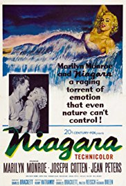
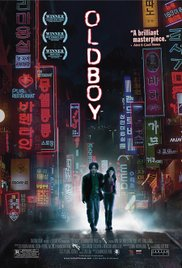
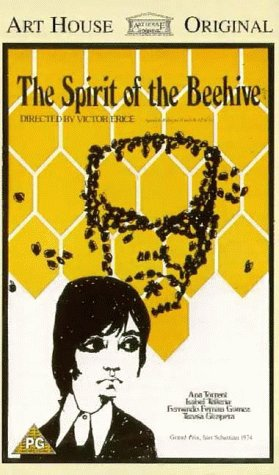
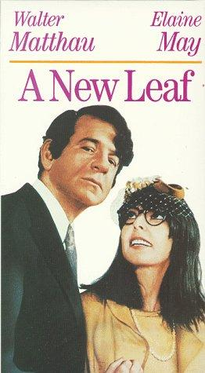
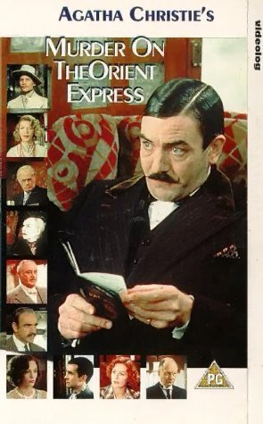
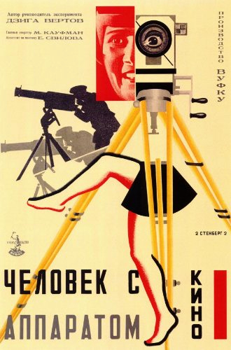
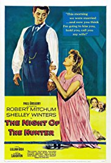

Season 52 (2017-2018)
The Cinema, Inc.'s 2017-18 season is completely SOLD OUT. To receive information about our 2018-19 season, please email your name and mailing address to us at thecinemainc@gmail.com, so that we can mail you a copy of the brochure for our 53rd season. The new season starts September 9, 2018.
- 
September 10, 2017
Niagara
USA, 1953, 92 min, Not rated
Directed by Henry Hathaway; Starring Marilyn Monroe, Joseph Cotten, Jean Peters, Max Showalter.
Marilyn Monroe had been in previous films, but Niagara turned her into an instant icon. This film is a rare Technicolor noir that crosses honeymoon camp with murder and mental illness. Monroe plays the voluptuous Rose, the unhappily married wife of George Loomis, a PTSD-afflicted Korean war vet. They have come to Niagara Falls to rekindle their marriage, but the embers of love are barely warm. Checking into the cabin next door is the chipper salesman type, Ray Cutler, and his wife, Polly. A love quadrangle seems like the obvious direction, but it takes a different turn when Polly spots Rose with another man and George suddenly disappears. A murder conspiracy emerges out of the mist. - 
October 8, 2017
Oldboy (Oldeuboi)
Korea, 2003, 120 min, R
Directed by Chan-wook Park; Starring Min-sik Choi, Ji-tae Yu, Hye-jeong Kang, Dae-han Ji.
After being kidnapped and imprisoned for fifteen years, Oh Dae-su is released without explanation. He learns he must find his captor in five days, unravel the mystery and exact revenge. Rage and hate inflate Dae-su’s courage and strength, making him a fierce animal bristling with raw energy and power. Oldboy is essentially a character study depicting the way vengeance consumes lives and souls as the film goes from mystery to prophesy to oddity. With its relentless pacing, it becomes increasingly ugly and disturbing, but you can’t turn away. At the end, there are no loose ends to unravel. - 
November 12, 2017
The Spirit of the Beehive (El espíritu de la colmena)
Spain, 1973, 95 min, Not rated
Directed by Víctor Erice; Starring Fernando Fernán Gómez, Ana Torrent, Isabel Tellería.
On the Castilian Plains in 1940, a group of children mob the local distribution truck as it delivers the latest film, Frankenstein. One scene in the movie shows a young girl killed by the monster. Ana, a young village girl, is mesmerized and questions her older sister Isabela for answers about the child’s death. Much of the film is spent with Ana trying to understand death and fascinated with the idea that Frankenstein lives on as a spirit. Ana soon heads off to a nearby mountainside to seek out the mystery of death and find that spirit. This film is not only about death, but how important arts can be to the development of a child. An epiphany can take place at any time…in front of a movie screen or in a classroom. - 
December 10, 2017
A New Leaf
USA, 1971, 102 min, Not rated
Directed by Elaine May; Starring Walter Matthau, Elaine May, Jack Weston, George Rose.
Walter Matthau plays a rich man who knows more about spending money than making it. When he learns he is broke, he sets a scheme in motion to get rich again. His plan is to marry a rich woman who no one will miss, then bump her off. Of course things don’t always work according to plan. The rich woman who has been tagged is as smart and naïve as Matthau’s character is dim and cunning. She’s rather clumsy but also a sweet little thing. As details of her premarital life are gradually revealed, we begin to understand the myriad ways in which every individual in her life has taken advantage of her naivete and charity. - 
January 14, 2018
Murder on the Orient Express
UK, 1974, 128 min, PG
Directed by Sidney Lumet; Starring Albert Finney, Lauren Bacall, Ingrid Bergman.
Sidney Lumet’s adaptation of Agatha Christie’s celebrated mystery is a nostalgic throwback to the early days of Hollywood when all-star casts routinely graced the screen. However, it is Albert Finney who truly runs the show here as the determined (and occasionally obnoxious) Hercules Poirot. This is not a great whodunit mystery, but this is old fashioned entertainment where the movie stars are on view the entire show. Everyone gets a chance to chew the scenery, show off their beautiful young (or revered old) faces and deliver a dialogue zinger or two. Lauren Bacall has the sauciest lines; Ingrid Bergman plays a repressed Swedish missionary; Sean Connery is a British officer with secrets to hide…you get the idea!  February 11, 2018
February 11, 2018
Once
Ireland, 2007, 85 min, R
Directed by John Carney; Starring Glen Hansard, Markéta Irglová, Hugh Walsh, Gerard Hendrick.
Once is a musical more concerned with music than costumes, and a love story more interested in love than sex. Unfolding on the streets of Dublin, the movie follows the fortunes of two people for whom prosperity is only a dream. Nope, they do not have names. Guy, the male lead, is a busker who sings songs on the nighttime streets. Girl, an immigrant Czech maid who relinquished a career as a concert pianist, sells roses on the same sidewalks to help support her mother and daughter. A music store owner allows her to play his pianos. When she takes Guy with her, they discover a powerful musical bond. The film’s music is at once ethereal and shattering but also its point. When you watch the film you will expect one outcome. Listen to it and you’ll hear quite another. March 11, 2018
March 11, 2018
Nine Queens
Argentina, 2000, 114 min, R
Directed by Fabián Bielinsky; Starring Ricardo Darín, Gastón Pauls, Leticia Brédice.
Nine Queens is a first-class heist movie. Juan is a struggling swindler, stuck cheating convenience stores out of unimpressive amounts of cash. He catches the eye of Marcos, a professional con artist, who coincidentally is in need of a new partner. The two spend a day getting acquainted, demonstrating various small-time cons for each other. They come across a potentially lucrative deal involving a set of forged stamps known as the Nine Queens. It is quite entertaining to watch these guys as they set up an extremely elaborate heist regarding the forged stamps. If you are a viewer who is hard to trick, you’ll enjoy trying to figure out the con. It’s fun to be fooled. April 8, 2018
April 8, 2018
Losing Ground
USA, 1982, 86 min, Not rated
Directed by Kathleen Collins; Starring Billie Allen, Gary Bolling, Clarence Branch Jr., Joe Garcia.
Sara Rogers has reached a crossroads in her life. She’s a professional African-American woman, but the film isn’t defined by race or sex. Sara is a professor at CCNY. She teaches a course on existentialism, but also pursues a project on “ecstasy,” even though confessing that she doesn’t know what it means to be transported outside herself. Sara’s husband, Victor, is her temperamental opposite: ebullient, effusive, outgoing. New horizons appear for Sara when she is asked to star in a student film. Cast in the role of a deceived lover who shoots her partner in a jealous rage, she finds her own emotions transformed. May 13, 2018
May 13, 2018
The Palm Beach Story
USA, 1942, 88 min, Not rated
Directed by Preston Sturges; Starring Claudette Colbert, Joel McCrea, Mary Astor, Rudy Vallee.
Gerry (Claudette Colbert) and Tom (Joel McCrea) have been married for years and are very much in love, but their marriage is falling apart because of financial problems. Gerry finally decides that it’s best to get a divorce in Palm Beach and start fresh. The film is full of witty dialogue, outstanding one-liners, razor-sharp satire, fantastic characterizations and a great sense of humor. The magic that makes Sturges’ films so entertaining is that they transport the audience to a different place where good things happen to good people and at the end true love always wins. June 10, 2018
June 10, 2018
McCabe & Mrs. Miller
USA, 1971, 120 min, R
Directed by Robert Altman; Starring Warren Beatty, Julie Christie, Rene Auberjonois, William Devane.
The film is brilliantly awkward…or, refreshingly authentic if one does not quite accept the glorious image of the American West the early Westerns portrayed. It’s set in a small mining town, a place looking for identity and a leader. The gambling gunslinger, John McCabe (Warren Beatty), believes he can give the town what it needs: a brand new brothel. McCabe runs the brothel as he wants until the classy whore Constance Miller (Julie Christie) arrives and offers him a deal he is forced to consider. Along comes a big mining company wanting to buy him out, but he reluctantly vows to defend his ground.- 
July 8, 2018
Man with a Movie Camera
Soviet Union, 1929, 68 min, Not rated
Directed by Dziga Vertov; Starring Mikhail Kaufman.
This silent film demonstrates the director’s insistence on skyrocketing the medium away from the theatrical and into a specific cinematic style that makes more use of camera technology. There is no distinctive plot or scenario to this film, no titles, actors or sets. What is to be witnessed is "real". Shot in several Russian cities, this hypnotic gem of a film has two goals in mind: to capture the day-to-day activities of the people and to demonstrate a vast array of camera techniques. The film consists of 1,775 separate shots whose average length is 2.3 seconds…a little like watching life on fast-forward. The audience is challenged to put together these events optically and emotionally to go beyond the common playacting of the time. - 
August 12, 2018
The Night of the Hunter
USA, 1955, 92 min, Not rated
Directed by Charles Laughton; Starring Robert Mitchum, Shelley Winters, Lillian Gish, James Gleason.
This film is a nightmarish journey through a surreal landscape. Director Charles Laughton establishes a complex mood, toned by contrasts of innocence and evil, humor and menace, spirituality and hypocrisy. Robert Mitchum poses as a preacher, who cozies up to rich women, kills them and runs off with their fortunes. He hears about a stash of stolen money from a guy in jail and hunts down the guy’s wife and two kids to find it. The kids are quick to see through him. A disturbing sense of foreboding grows as he ingratiates himself with the woman and the townsfolk. The final sequence illustrates the clash of conflicting spiritual principles.